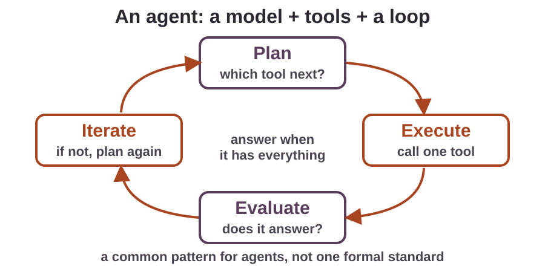
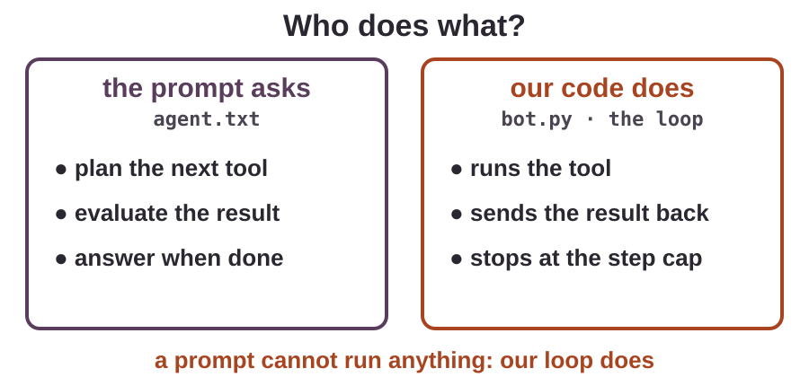
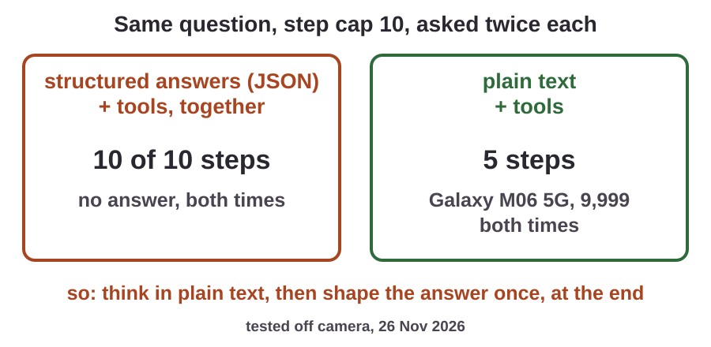
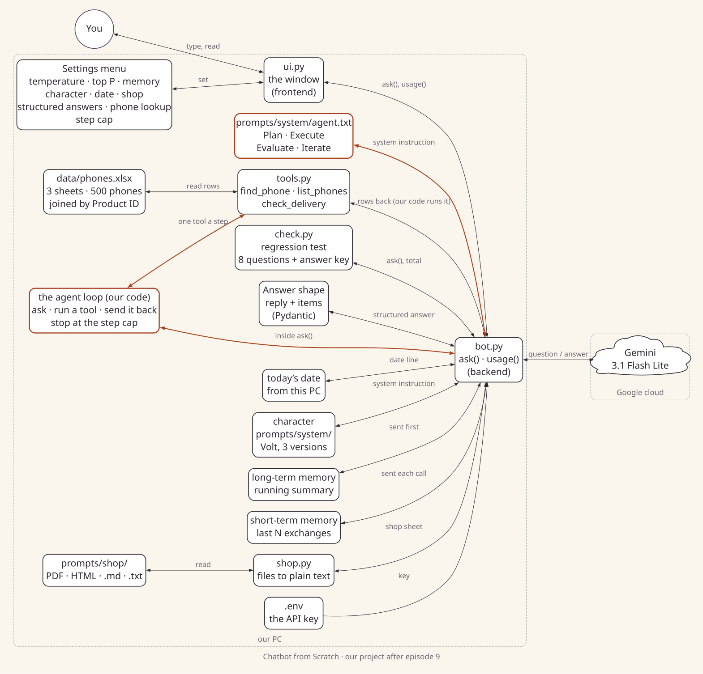

Prefer to watch? This chapter goes with Episode 9 (11:31). Open it on YouTube.
.venv and data/phones.xlsx. Antigravity, signed in: install Antigravity on Windows. Your own Gemini key in .env..env with GEMINI_API_KEY; the README shows the setup.The wrong cheapest phone
Chapter 8 ended on a question one tool could not answer. Ask it in the window from Chapter 8:
Which is the cheapest Samsung phone in stock, and when can it be delivered?
Volt says the Galaxy S26 (12GB / 512GB), at 89,999 rupees, delivered in about 3 days. The grey line under the reply says find_phone("Samsung") -> 10 rows.
Check the workbook itself. In Excel, add a Price column to the Product Information sheet with =XLOOKUP(A2,'Product Pricing'!A:A,'Product Pricing'!C:C), filter Brand to Samsung, and sort Price smallest to largest. Excel counts 101 Samsung phones. The cheapest is the Galaxy A06 (2GB / 32GB), VZ-0099, at 7,999 rupees. On the Product Availability sheet, VZ-0099 is in stock, delivered in 2 days.
So where did 89,999 come from? find_phone stops at 10 rows, and for "Samsung" those 10 are all S26 models: the A06 at row 1 of the sorted sheet never reached Volt. A tool shows only what it is built to find.
What an agent is
Say you walk into a phone shop and ask for the cheapest phone that reaches you tomorrow. The shopkeeper checks the price list first. Then he checks delivery, one phone at a time, until one fits.
An agent works the same way. The model picks a tool, reads the result, and decides the next step, in a loop our own code runs until it can answer. Written as steps:
- Plan: which tool answers the next part?
- Execute: call that one tool.
- Evaluate: does the result answer the question?
- Iterate: if not, plan the next tool call.
Plan, Execute, Evaluate, Iterate is a common pattern for agents, not one formal standard.

The agent prompt
Write these steps down for Volt yourself, in a new file in the system folder of the prompts: prompts/system/agent.txt.
You can use tools to answer. Work step by step: 1. Plan: decide which tool answers the next part of the question. 2. Execute: call that one tool. 3. Evaluate: does the result answer the question? 4. Iterate: if not, plan the next tool call. When you have everything, answer in one reply. Never invent a price, a stock status or a date.
This file only asks Volt to work this way. It cannot run anything.
The agent prompt for Antigravity
Now a prompt file for the agent in Antigravity, prompts/09-agent.txt, to turn Volt into an agent. It adds 2 tools: list_phones lists a brand's phones, cheapest first, and check_delivery tells when one phone arrives. Our own code runs the loop, up to a step cap of 6.
Task : Turn Volt into our first agent: give it two more tools, and let our own code run the tools in a loop, one step after another, until Volt can answer or reaches a step cap
Context :
- Use the virtual environment .venv in this folder. Don't create a new one.
- Keep find_phone(model) in tools.py as it is.
- Add list_phones(brand, in_stock_only) to tools.py. It returns the phones of that brand from data/phones.xlsx, joined by Product ID, cheapest first. In stock only leaves out phones that are Out of stock; Low stock still counts. At most 10 rows: product ID, model, variant, selling price in rupees, status. No delivery days.
- Add check_delivery(product_id) to tools.py. For one product ID it returns model, variant, status, delivery days, and the date it arrives: today's date plus the delivery days. When the phone is out of stock, it returns the restock date instead.
- In bot.py, tell Gemini about all three tools, each with a one-line description.
- I have written prompts/system/agent.txt myself. Add it to the system prompt whenever Phone lookup is on. Don't change the file.
- Our own code runs the loop: ask Gemini; when it asks for a tool, run the tool, send the result back, and ask again. Every call to Gemini is one step. Stop when Volt answers without a tool, or at the step cap.
- Add Settings > Step cap: a number from 1 to 10, starting at 6.
- When the loop reaches the step cap before Volt has answered, don't ask Gemini again. Volt replies: "I couldn't finish this in N steps. Please ask again or raise the step cap." Say "1 step" when N is 1.
- In the window, the grey tool line becomes one numbered grey line per tool call under the reply, for example: Step 1: list_phones("Samsung", in stock) -> 10 rows. Then one last grey line: Steps: 3 of 6.
- Volt never invents a price, a stock status or a date.
- Keep structured answers working, and count every step's tokens in the tokens in, as before.
- Keep the date, the shop sheet, the character, the memory, the settings and everything else as it is.
- Don't write test files; I will try it myself.
Folder arch :
- ui.py : the window (frontend)
- bot.py : the chatbot (backend), now an agent: the loop and the step cap
- tools.py : find_phone, list_phones, check_delivery; reads data/phones.xlsx
- shop.py : reads the shop files into plain text
- check.py : our regression test
- data/phones.xlsx : the 500 phones, 3 sheets
- prompts/ : our prompts
- prompts/system/agent.txt : how Volt works step by step with tools
- prompts/shop/ : our shop files
"Our own code runs the loop" keeps every step where we can see it; the step cap is our code's brake.
Review and implement prompts/09-agent.txt
When it is done, the agent has changed 3 files: tools.py, bot.py and ui.py. It also ran our regression test, and its report says only 4 of 7 passed. Keep that in mind. Click Accept all.
A note on the model. In Antigravity we used the Gemini 4 Hydrogen model, with thinking effort chosen as Medium. Pick the model your Antigravity offers.
What the agent wrote
tools.py:list_phones(brand, in_stock_only)puts a brand's phones in price order and returns at most 10, with their Product ID.check_delivery(product_id)works out the delivery date from today's date, or gives the restock date.bot.py: the 3 tools are described to Gemini, andagent.txtjoins the system prompt. Near the top,DEFAULT_STEP_CAP = 6. Then the loop,for step in range(1, step_cap + 1): ask Gemini, run the tool it asks for, send the result back.ui.py: one grey line for each step under the reply, thenSteps: N of 6, and Settings › Step cap.
Who does what
The prompt asks Volt to plan the next tool and to evaluate the result. Our code runs the tool, sends the result back, and stops at the step cap. A prompt cannot run anything. Our loop does.

The step cap
- A step is one call to Gemini.
- The cap is 6 by default:
DEFAULT_STEP_CAP = 6inbot.py. Change it in Settings › Step cap, from 1 to 10. - At the cap, our code stops Volt without another call, and Volt says: I couldn't finish this in 6 steps. Please ask again or raise the step cap.
It is our code's brake, not the prompt's.
The agent, live
python ui.py
Ask the same question again. Under the answer, the steps:
Step 1: list_phones("Samsung", in stock) -> 10 rows
Step 2: check_delivery("VZ-0099") -> In stock, 2 days
Steps: 3 of 6The right answer: the Galaxy A06 (2GB / 32GB), at 7,999 rupees, delivered by 28 November 2026 (the date is today's date plus 2 days). It took 4,714 tokens in; the counter at the top of the window adds up everything in this window.
When it does not stop
Now a harder question, in a new chat: I need a Samsung phone delivered by tomorrow. Which is the cheapest?
| Step | Tool call | Result |
|---|---|---|
| 1 | list_phones("Samsung", in stock) | 10 rows, cheapest first |
| 2 | check_delivery("VZ-0099") | 2 days |
| 3 | check_delivery("VZ-0100") | 4 days |
| 4 | check_delivery("VZ-0096") | 1 day: the answer |
| 5 | check_delivery("VZ-0101") | 2 days: Volt kept checking |
| 6 | the step cap | "I couldn't finish this in 6 steps." |
With the cap raised to 8 the story is the same: it could not finish in 8 steps. With the cap at 1, our code stops Volt after its first step. The prompt cannot do that.
Then run the regression test: 4 of 7. The two charger questions now get 0, and so does the Galaxy S25. Our regression test caught real failures.
A first try, by hand: 2 lines added to agent.txt.
Use the tools only for phones; accessories are in the shop sheet. The list is cheapest first: stop at the first phone that answers the question.
That did not help. Changing the prompt alone could not fix it: the cap still stops Volt after 6 steps, and check.py gives 5 of 7.
Why it would not stop
We tested it off camera, asking the same question twice each way, with a step cap of 10. With our structured answers, the JSON reply from Chapter 7, and the tools together, Gemini kept calling tools: 10 steps, no answer, both times. In plain text, the same agent stopped at step 5, with the right answer, both times.
So let the agent think in plain text, and shape the answer once, at the end.

Prompt 2: shape it at the end
A second prompt file, prompts/09-structured-last.txt. The loop runs without the JSON shape. When Volt has answered, our code makes one last call, with no tools, to shape the answer.
Task : Let Volt stop when it has the answer: run the agent loop without the JSON shape, and shape the answer once at the end Context : - Use the virtual environment .venv in this folder. Don't create a new one. - Today, when the tools and structured answers are on together, Gemini keeps calling tools until the step cap. - In bot.py, run the agent loop without the JSON shape: ask Gemini, run the tools, send the results back, until Volt answers in plain text or reaches the step cap. - When Volt has answered, our code makes one last call to Gemini, with no tools, that turns this answer into the reply and items, as before. This last call is not a step, but its tokens count in the tokens in. - When structured answers is off, there is no last call. - Keep agent.txt, the step cap, the step lines, the total and everything else as it is. - Don't write test files; I will try it myself.
The last call is not a step, but its tokens count in the tokens in.
Review and implement prompts/09-structured-last.txt
The agent changes bot.py and runs our test again. Click Accept all. In bot.py, the loop now has the tools but runs without structured answers, so Volt answers in plain text; after the answer, one last call shapes the reply and the items.
Live, again
| Question | Volt's answer | Steps |
|---|---|---|
| Which is the cheapest Samsung phone in stock, and when can it be delivered? | Galaxy A06 (2GB / 32GB), 7,999 rupees | 3 of 6 |
| I need a Samsung phone delivered by tomorrow. Which is the cheapest? | Galaxy M06 5G (4GB / 64GB), 9,999 rupees | 5 of 6: it stops at the 1-day phone |
The regression test grows
Add the question from the start to the answer key in check.py, by hand:
("Which is the cheapest Samsung phone in stock, and when can it be delivered?", 7999),Run it: 7 of 8. Line 2, the charger with a cable, gives 1,198, not the offer price, 949: the last call listed the charger and the cable on their own. So one sentence, by hand, at the end of the items rule of that last call in bot.py:
Use the price you said in your answer: when you gave one offer price for products sold together, list them as one item at that price.
python check.py
8 of 8 passed.
Two failures, two fixes
| What went wrong | Why | The fix | |
|---|---|---|---|
| Failure 1 | Volt found the 1-day phone at step 4 but kept checking until the cap | Structured answers (JSON) on every call, together with the tools, kept Gemini calling tools | Let Volt work in plain text, and shape the JSON once, at the end (prompt 2) |
| Failure 2 | check.py gave 4 of 7, then 7 of 8 | Volt used the tools on accessories, and the charger-with-cable offer became 2 items: 1,198, not 949 | Prompt 2, then one sentence in the items rule: an offer is one item |
| Tried, did not help | 2 lines in agent.txt | The prompt only asks; the cause was in how our code called Gemini | Changing the prompt alone could not fix it |
Our project so far
New in this chapter, in orange below: agent.txt gives Volt its steps, tools.py has 3 tools, and our own loop runs them, up to the step cap.

Quick reference
Every command and menu from this chapter. The prompts are above.
| Command or menu | What it does | Use it when |
|---|---|---|
Review and implement prompts/09-agent.txt | Adds the 2 tools, the loop, the step cap and the step lines | After writing agent.txt and the prompt |
Review and implement prompts/09-structured-last.txt | Runs the loop in plain text and shapes the answer once at the end | When the agent will not stop |
python ui.py | Opens the window | To ask Volt |
| Settings › Step cap | Sets how many calls to Gemini one answer may take (1 to 10, 6 by default) | To see the brake work |
python check.py | Runs the regression test | After every change |
The takeaway
- A tool shows only what it is built to find: Volt's one tool saw 10 of 101 phones, so better tools come first.
- The prompt asks the model to plan and evaluate; your own loop runs the tools, and its step cap is the brake.
- Let the agent work in plain text and shape the JSON once at the end, and let the regression test tell you when something breaks.
Is a cap of 6 enough?
The goal: watch the loop and its brake on a question of your own.
The steps: in your copy of the Chapter 8 project, open the Antigravity agent panel and send Review and implement prompts/09-agent.txt, then prompts/09-structured-last.txt. Run python ui.py and ask: Which is the cheapest Xiaomi phone delivered by tomorrow? Read the grey Step lines and the Steps: N of 6 line under the answer.
Guess first: is a step cap of 6 enough?
One question for you: which actions should an agent like Volt, our assistant, never take without asking you?
Next: an agent we can trust
An agent that runs tools on its own also needs limits: a tool can fail, and an order should never go out without you. Chapter 10 makes our agent safe to trust.
References
Where each number on this page comes from. Everything was also checked in our own recording on 26 Nov 2026.
- Google · Function calling with the Gemini API Several function calls in a row, and sending each function response back. https://ai.google.dev/gemini-api/docs/function-calling
- Google · Structured output with the Gemini API The JSON answer shape from Chapter 7. https://ai.google.dev/gemini-api/docs/structured-output
- Microsoft · XLOOKUP function The Price column in the Excel check. https://support.microsoft.com/en-us/office/xlookup-function-b7fd680e-6d10-43e6-84f9-88eae8bf5929
- Learn AI by Building · chatbot-from-scratch on GitHub Every chapter's finished code and prompts. https://github.com/Aditya-402/chatbot-from-scratch
- My own recording · 26 Nov 2026, Windows 11 Every answer, step and token count on this page is from those takes, on Gemini 3.1 Flash Lite; the off-camera test of the cause too.
New chapters and episodes come out every week. Follow along on YouTube or the WhatsApp channel. Questions? Ask under the video on YouTube; I read every comment.